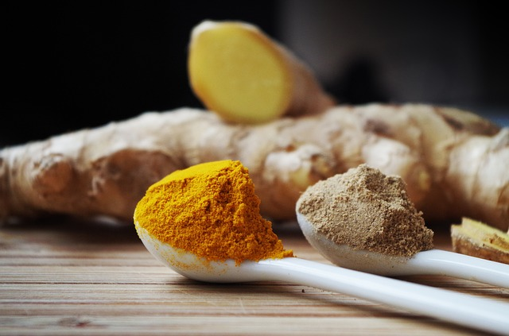

Cuscús con patatas
Hoy os presentamos una receta típica de marruecos, muy rica, muy sana y que admite un millar de variaciones, la que os vamos a contar es la que hacemos últimamente, anteriormente la hacíamos sólo con calabaza y patata y le añadíamos un poco curry y un poco de cayena para dar un toque picante, una muestra de la versatilidad de este producto. Comenzamos.
